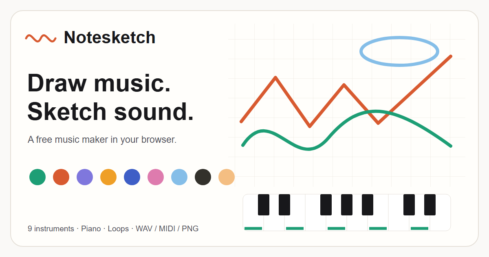

Nine instruments
Layer distinct instrument colors in one composition. Use the pen, eraser, undo, brush sizes, grid snap, and random composition tool to shape your traces.
Notesketch is a free visual music maker that turns drawings into sound. Sketch a melody, choose an instrument color, and hear your drawing repeat as a musical loop. The studio runs in your browser without an account.
Start sketching a melody
Layer distinct instrument colors in one composition. Use the pen, eraser, undo, brush sizes, grid snap, and random composition tool to shape your traces.
Explore Major Pentatonic, Minor Pentatonic, Blues, Japanese Hirajoshi, Dorian, and Chromatic scales. Key Filter selects a custom set of notes; Freestyle lets you play every piano note.
Program 1 displays ink traces, Program 2 turns notes into a matrix, and Program 3 shows a reactive visualizer. The continuous pitch control lets drawings glide between notes.
Download WAV loops, MIDI files, and PNG images. In browsers with video recording support, Record Take captures the canvas and its audio as an MP4 or WebM clip.
Yes. You can draw, play instruments, save sketches, and export creations without paying or creating an account.
No. Start by drawing a line and pressing Play. The scale controls help keep notes in a selected musical scale while you experiment.
Saved sketches stay in this browser's local storage. They are not automatically synced to another browser or device. Clearing browser data can remove them, so export important creations or keep their shared links.
Yes. The layout adapts to smaller screens, and the canvas and piano accept touch input. Use a modern browser with JavaScript, HTML Canvas, and Web Audio support.
Video recording needs MediaRecorder and canvas capture support. The studio selects an available MP4 or WebM format; support varies by browser. WAV, MIDI, and PNG are separate export options.
The shared link contains the composition's drawing and musical settings. Someone opening it can press Play to listen. Share links only with people you want to have access to that composition.
Notesketch is created by Dimas Mahardhika Wibowo and inspired by Play Music Theory. It is built for playful experiments with drawing, melody, rhythm, and sound.
Create a sound sketch